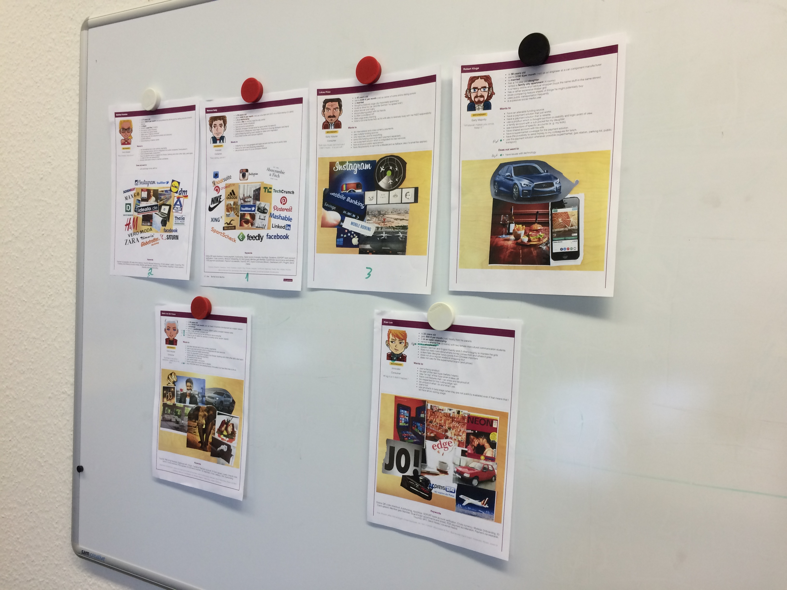

Kicking off User-Centred Design
Mobile payment was still the stuff of sci-fi back in 2012. It was
no wonder then, that upon launch of their mobile payment app, the
benefits of QR-code based mobile payments was viewed with
skepticism, caution and even disbelief. The design of the apps,
marketing and onboarding showed little awareness, let alone
competence in assuaging the perceptions held by their target
audience. On top of this, the product and service was riddled with
problems caused by a complete lack of customer awareness and
unchecked biases.
The Brief
Introduce user-centred design (UCD) to Yapital, and work with the
company's product teams in Hamburg and Kiev to integrate UCD
practices into their product development cycle.
The Process
I decided to use persona research and formation as a visible
‘entry strategy’. It's an approach that can be quite engaging, and
my hope was that this very visual, collaborative exercise would
begin raising awareness and enthusiasm.
Kick-Off presentation at company meeting
UCD is not just a design framework, it’s a mentality that needs to
be widely adopted. I decided make it as participatory as possible,
to improve buy-in, and because I simply couldn’t do it alone. To
raise awareness I presented UCD and benefits at a company meeting.
This was received very well.
Some slides from the presentation.
Colleague Recruitment
I began recruiting those colleagues whom I thought would be
effective 'change agents' from different departments to help.
Management support from each department certainly made this
process a lot easier. This was the ‘core’ team.
User Research
I started simply, by creating a basic interview script which could
be used by my recruited colleagues to carry out discovery
interviews with family, friends and acquaintances who fit our
defined user segments. The questions were quite basic, and I
offered a few tips, and demonstrated an interview through
role-play.
1 month later we had 20 recorded interviews, of reasonable quality
and depth. As the interviews were codified and analysed, insights
were being informally fed back through the departments by
colleagues. Which was extremely exciting to see.
Once the personas were fleshed out, with the aid of secondary
market research, we officially introduced the 3 consumer personas
and 2 merchant personas to all our colleagues, which are now being
used during design processes and prioritisation meetings.
